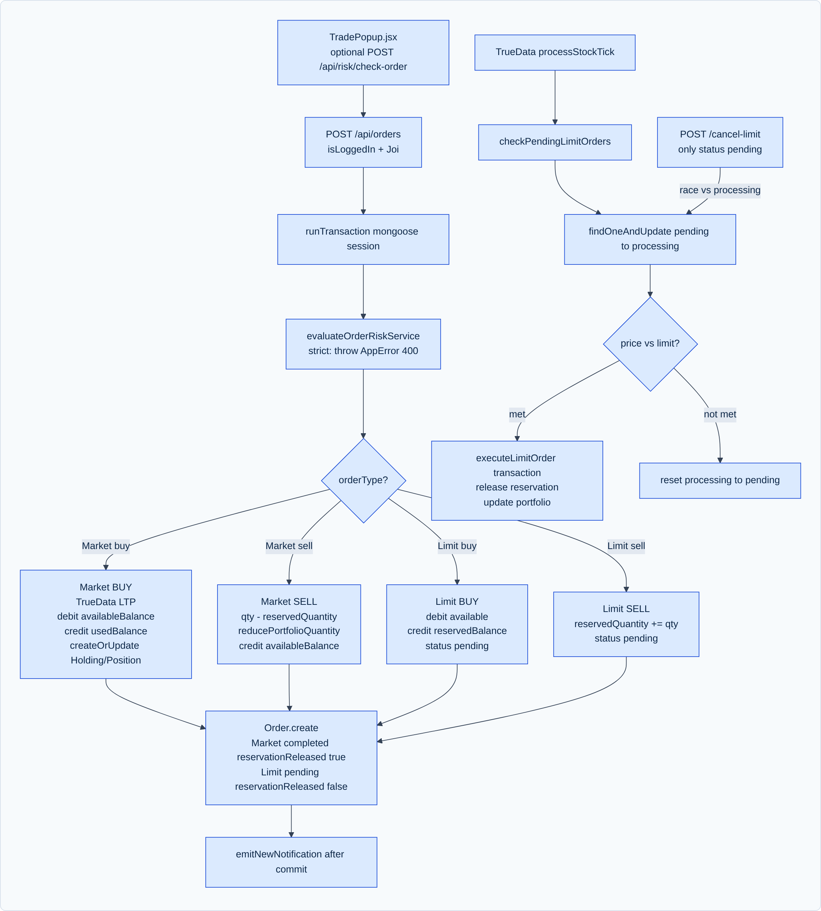
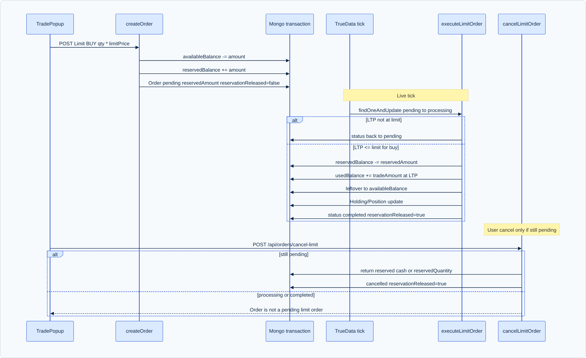

The core of the platform is an institutional paper-trading engine that faithfully replicates the financial rules, balance management, and lifecycle state transitions of real-world stock exchanges. It enforces atomic transaction safety, prevents overdrafts, implements cash and inventory reservations, and matches limit orders in real time against live market ticks.

When a trader submits a Market Order:
tradeAmount = qty * LTP. The system queries Funds inside an atomic MongoDB session. If availableBalance < tradeAmount, the transaction aborts with an Insufficient Funds error.Holding for the user and symbol. If holding.quantity < qty, the transaction aborts with an Insufficient Quantity error. Short selling is prohibited in CNC delivery.
Funds.updateOne({ userId }, {
$inc: { availableBalance: -tradeAmount, usedBalance: tradeAmount }
});
Holding.findOneAndUpdate({ userId, symbol }, {
$inc: { quantity: qty },
$set: { averagePrice: newWeightedAverage, currentPrice: LTP }
}, { upsert: true });
Funds.updateOne({ userId }, {
$inc: { availableBalance: +tradeAmount, usedBalance: -originalCostBasis }
});
Holding.updateOne({ userId, symbol }, {
$inc: { quantity: -qty }
});
If the remaining holding quantity reaches 0, the holding document is removed.
status: 'completed', orderType: 'MARKET', and reservationReleased: true.A Limit Order allows a trader to specify an exact maximum price they are willing to pay (Limit Buy) or minimum price they are willing to accept (Limit Sell). Because execution may occur minutes or hours later, the engine locks capital or inventory to guarantee settlement when the market condition triggers.

createOrderServices.js):
reservedAmount = qty * limitPrice. This amount is moved immediately from availableBalance to reservedBalance:
Funds.updateOne({ userId }, {
$inc: { availableBalance: -reservedAmount, reservedBalance: +reservedAmount }
});
The order is recorded with status: 'pending', reservedAmount, and reservationReleased: false.
Holding.updateOne({ userId, symbol }, {
$inc: { quantity: -qty, reservedQuantity: +qty }
});
checkPendingLimitOrders.js):
Whenever TrueData streams a price update (e.g., RELIANCE LTP = ₹2,480):
Order.find({ symbol, status: 'pending' }).currentLTP <= order.price.currentLTP >= order.price.
const lockedOrder = await Order.findOneAndUpdate(
{ _id: order._id, status: 'pending' },
{ $set: { status: 'processing' } },
{ new: true }
);
If another thread already acquired the lock, lockedOrder is null and execution gracefully skips.
actualCost = qty * currentLTP.currentLTP <= limitPrice, the actual cost is typically less than or equal to the reserved cash!
const refundAmount = order.reservedAmount - actualCost;
Funds.updateOne({ userId }, {
$inc: {
reservedBalance: -order.reservedAmount,
usedBalance: +actualCost,
availableBalance: +refundAmount // Leftover savings returned!
}
});
quantity += qty.status: 'completed', reservationReleased: true.cancelLimitOrderService.js):
If the trader cancels a pending limit order before it triggers:
status: 'pending' and reservationReleased: false.status: 'cancelled', reservationReleased: true.reservedAmount = 10 * ₹2,500 = ₹25,000availableBalance = ₹1,00,000 - ₹25,000 = ₹75,000reservedBalance = ₹25,000usedBalance = ₹0actualCost = 10 * ₹2,480 = ₹24,800refundAmount = ₹25,000 - ₹24,800 = ₹200reservedBalance = ₹25,000 - ₹25,000 = ₹0usedBalance = ₹0 + ₹24,800 = ₹24,800availableBalance = ₹75,000 + ₹200 = ₹75,200Total Account Equity = ₹75,200 (cash) + ₹24,800 (stock value) = ₹1,00,000